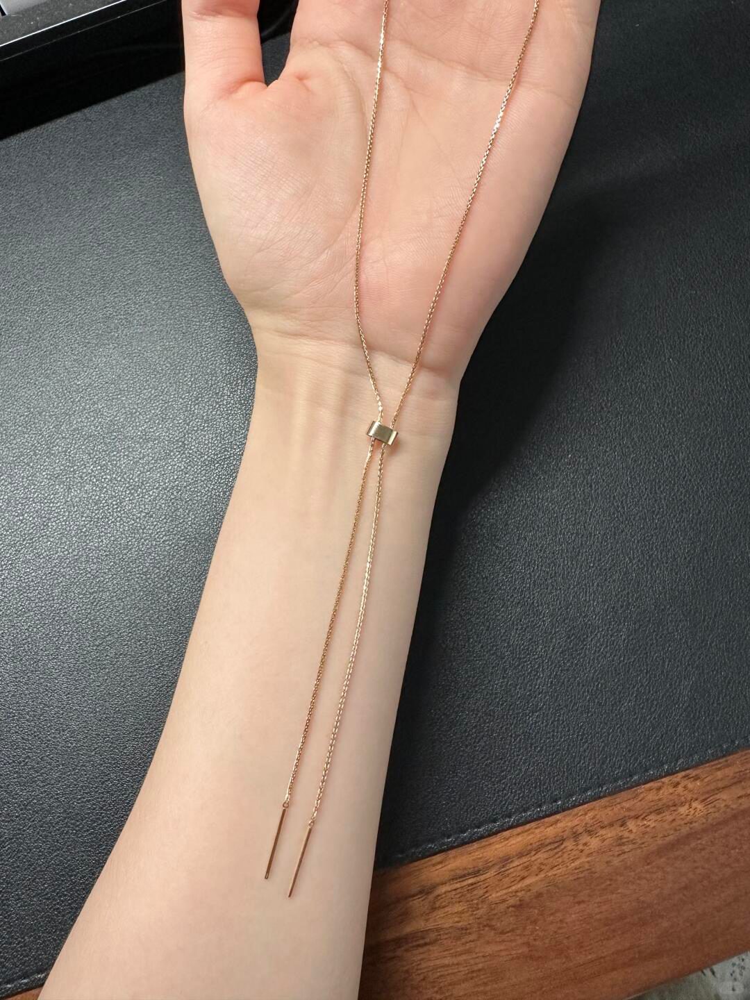
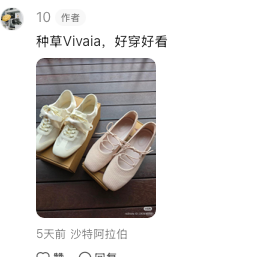
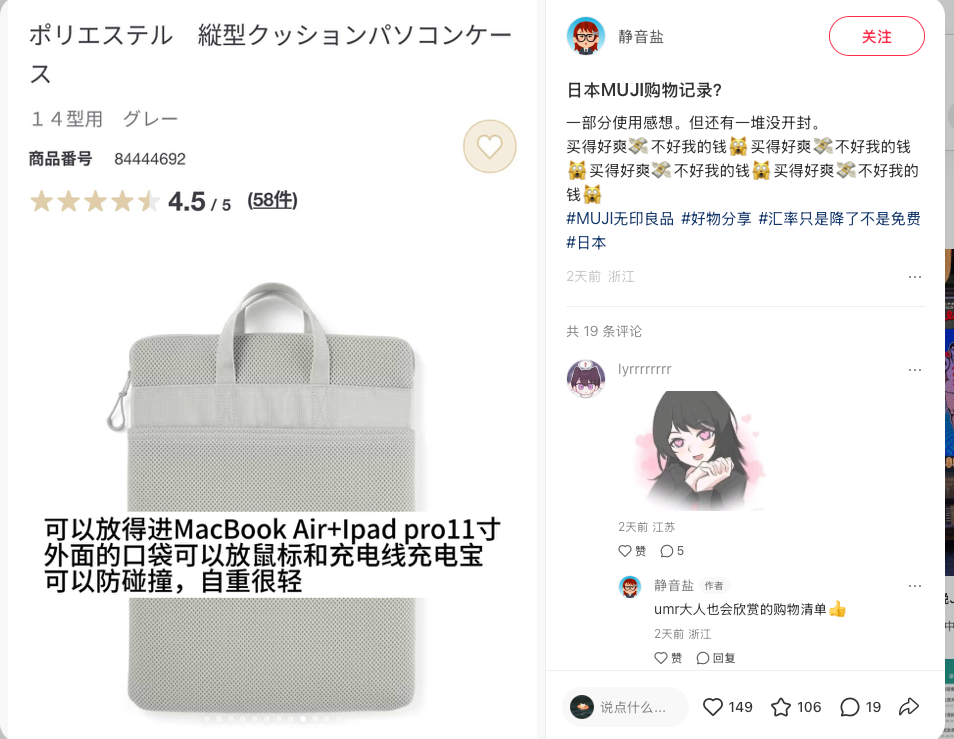
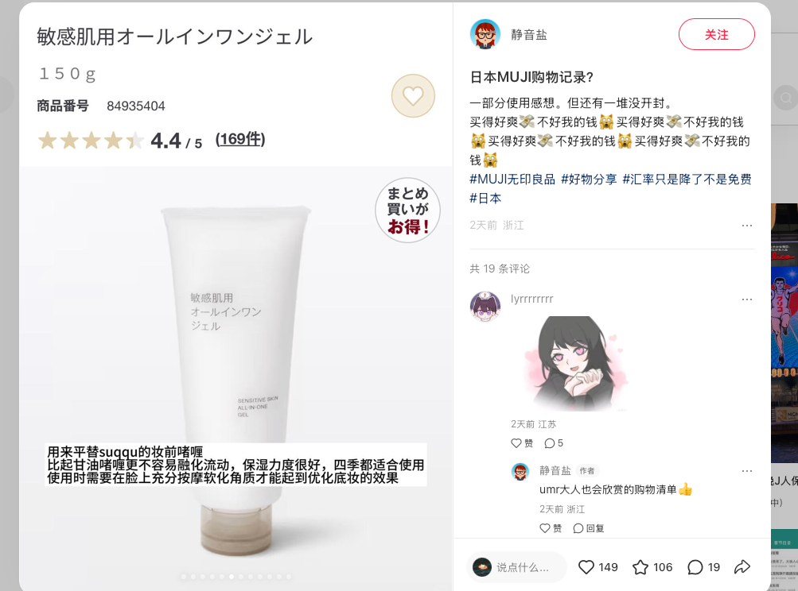

总览
大阪
Day1 · Day3 · Day4 上午
5 家
共 10 家 · 美食 5 家 · 购物 5 家
每日行程 机票已录入 · Day1 大阪 / Day2 京都 / Day3 大阪 / Day4 大阪→神户 / Day5 神户→UKB
Day 110/2 周五大阪
✈️ 去程 · 澳门航空 NX856经济舱 · 中型机 320 · 有餐食 · 准点率 96.67%
08:20MFM 澳门国际机场
飞行 3h35m
12:55KIX 关西国际机场 T1
📌 落地后入境 + 取行李约 1 小时，HARUKA/南海电铁至大阪约 50–70 分钟 → 预计 14:30–15:00 抵达大阪。先去酒店放行李，下午逛道顿堀/难波。
🏨 入住 · Sugata Hotel Osaka Shinsaibashi
Series by Marriott · 日本首店 · Marriott Bonvoy 积分可用
📍 大阪市中央区南新地2-6-25 · 地下鉄「長堀橋」駅 步行约 400m ／「心斎橋」駅 步行约 600m
📌 2026 年新开业（256 间），步行可达道顿堀/难波/なんばウォーク。入住 10/2 → 退房 10/5（3 晚）。
其余待排 —— 到下方「美食清单」点 ＋加入行程 添加
Day 210/3 周六京都
🏨 回大阪住 · Sugata Hotel（第 2 晚）
退房 10/5
全天京都（阪急梅田⇄京都河原町 约 45 分），傍晚返回大阪酒店。
待排
Day 310/4 周日大阪
🏨 住 Sugata Hotel（第 3 晚）
10/4 夜 · 明天上午退房
全天大阪。明早退房后行李寄存或拖去京都。
待排
Day 410/5 周一大阪 → 神户
🚄 中午 大阪 → 神户梅田 → 三宫 约 30 分钟（阪急 / 阪神 / JR）
上午大阪 —— 退房后逛最后半天
下午神户 —— 有整整一个下午
📌 退房后行李可寄存或带去神户酒店。当晚住神户，Day5 去机场更顺：三宫 → 神户机场 UKB · Port Liner 约 18 分钟。
🏨 入住 · Hotel Monte Hermana Kobe Amalie
三宮駅地下鉄出口步行 3 分 · 生田神社隣
📍 兵庫県神戸市中央区中山手通2-2-28 · 地下鉄「三宮」駅 西1番出口 步行约 3 分 ／ JR「三ノ宮」駅 西出口 步行约 7 分
📌 TEL 078-393-7111 · 180 间 · DHC アメニティ。入住 10/5 → 退房 10/6（1 晚）。退房后 Port Liner 至 UKB 约 18 分钟。
神户店铺待记录 —— 到下方清单点 ＋加入行程 添加
Day 510/6 周二神户 · UKB 返程
✈️ 返程 · 星宇航空 JX835 / JX205经济舱 · 有餐食 · 行李直达 · 无需过境签
11:40UKB 神户机场 T2
飞行 3h
13:40TPE 桃园机场 T1（台北）
🔄 中转中国台北 · 停留 4h5m · 行李直达 · 无需过境签
17:45TPE 桃园机场 T1
飞行 1h55m
19:40MFM 澳门国际机场
📌 神户机场 T2 国际线建议提前 2 小时到 → 09:40 前抵达 UKB（三宫 → 神户机场 Port Liner 约 18 分钟）。当天上午基本只能赶飞机，神户景点建议挪到 Day2–4。
其余待排 —— 神户景点建议改到回程前的白天
景点清单 仅备选 · 不排入行程
下面这些是只存清单、不进每日行程的备选景点（来自你发的两张图）。⚠️ 标注「待核实 / 未证实」的是我没能从源头核实的信息，别当准数据用。
大阪 19 处
⭐ 看点
大正时代住友家本邸旧址，造园家小川治兵衛设计的纯日式池泉回游式庭园。池心浮岛、三方假山，环绕园路+石桥+茶室凉亭，人少安静
⚠️ 图上写作「跪式宫」，查无此地名 —— 按图描述（皇家园林/池为中心回游式/安静人少）判定为慶沢園，请确认。大人 ¥300，与大阪市立美術館共通券 ¥600。TEL 06-7494-3583
＋ 加入行程
⭐ 看点
梅田地标：屋顶红色摩天轮；馆内扭蛋机天堂、大头贴机、年轻潮流品牌
⚠️ 图上归在「六甲山周边」，实际在大阪梅田（离六甲山约 30km），已按实际位置归入大阪。摩天轮确切营业时间与票价待核实
＋ 加入行程
⭐ 看点
キディランド 大阪梅田店（内含
KIRBY'S PUPUPU MARKET 大阪梅田店，星之卡比周边，10:00–21:00）、どんぐり共和国（吉卜力）、スヌーピータウンショップ、Sanrio 等
星のカービィ × 阪急電車 联名活动常年更替，出发前查当期内容。キディランド 北館B1F 标 TAX FREE
＋ 加入行程
⭐ 看点
NU茶屋町、チャスカ茶屋町、梅田ロフト 等；图上称有动漫周边、手办、谷子、异国调味食品
⚠️ 图上写作「恩优茶屋丁」「连接阪崎香山街」，均按茶屋町记录（后者疑为阪急かっぱ横丁，未核实）。图上「十月可领 2000 円优惠券（复制页面+护照）」查无任何依据，标为未证实
＋ 加入行程
景点箕面达摩胜运
⭐ 看点
1300 年古刹、西国三十三所第 23 番札所，本尊十一面千手観世音菩薩（本堂由丰臣秀赖再建）。招牌画面是
境内满地「勝ちダルマ」——石垣、灯籠上、树根边到处都摆着一颗颗小达摩；还有達磨みくじ、弁天池、二階堂、多宝塔。以「
勝運」闻名，参拜求考试／求职／比赛／商卖
入山志納料：大人（高中生以上）¥500 / 小・中学生 ¥400 / 未就学児 ¥100 / 2 歳以下免费；官方另有「Web 入山券」，可省去现场排队。交通：御堂筋線 梅田→千里中央 → 北大阪急行 千里中央→箕面萱野 → 阪急バス直行约 20 分，合计单程约 1 小时（估算，含转乘）；打车从箕面萱野駅约 15 分。⚠️ 巴士 9:00–15:00 每 10 分钟一班 + 临时增班；11 月红叶季极挤、周末会滞留排长队（10 月初相对好）。府道4号摩托车全天禁行。就近可顺带箕面大滝、吃枫叶天妇罗。TEL 072-721-7010
＋ 加入行程
🏯
大阪城公园｜护城河・天守阁外观
景点大阪城公园历史
⭐ 看点
护城河、石墙、天守阁外观一起看；公园免费，天守阁需购票。秋季红叶/春季樱花绝景
📌 从东梅田站坐谷町线往八尾南方向 3 站到谷町四丁目。建议外观拍照为主，内部登楼看预算。
＋ 加入行程
⛩
四天王寺｜金堂・五重塔・回廊
景点寺庙日本最早官寺
⭐ 看点
圣德太子创建的
日本最早官寺（593年）；金堂、五重塔、回廊；每周日在境内有缘日集市
📌 从谷町四丁目坐谷町线 3 站。石鸟居一侧出来步行约 20 分钟到新世界。
＋ 加入行程
⭐ 看点
拍通天阁和老街同框、逛大招牌、吃
串炸（だるま等）和
章鱼烧；昭和风情老街
📌 从四天王寺石鸟居步行约 20 分钟。适合中午在这里吃饭歇脚。
＋ 加入行程
⭐ 看点
「大阪的厨房」——有棚顶的市场街；现吃
海鲜丼、河豚、烤串、玉子烧；水果摊可试吃
📌 从恵美須町坐堺筋线 1 站到日本桥。人多时注意随身物品。
＋ 加入行程
⭐ 看点
高达 12m 的
巨型狮子头（獅子殿），张嘴造型极具冲击力，是难波地标打卡点；境内还有「学业成就」石碑
📌 黑门市场步行可达。人少清净，适合快速打卡拍照。
＋ 加入行程
🍊
橘子街（Orange Street）｜家居・选物
景点商店街心斋桥选物
⭐ 看点
大阪的
家居/生活方式选物街——家具店、杂货店、咖啡馆、买手店林立；比心斋桥筋安静，适合慢慢逛
📌 难波八阪神社步行可达，连接美国村。
＋ 加入行程
🇺🇸
美国村（Amerikamura）｜古着・潮流
景点古着潮流心斋桥
⭐ 看点
大阪最大
古着/潮流聚集地；三角公园周边有街头艺人；古着店 300 円起，名牌中古也有
📌 橘子街步行可达，连接心斋桥筋商店街。
＋ 加入行程
⭐ 看点
大阪最著名的
拱顶商店街——药妆、服饰、餐饮一条龙；沿街有大丸心斋橋店、Air BicCamera 等
📌 美国村步行可达，连接法善寺横丁/道顿堀。
＋ 加入行程
⭐ 看点
石畳铺地的
昭和风情小巷；
法善寺（不动明王）的水挂不动尊——泼水许愿；巷内有料亭、居酒屋、鳗鱼饭
📌 心斋桥筋商店街南端拐入，出来就是道顿堀。傍晚时分氛围最好。
＋ 加入行程
⭐ 看点
格力高跑步人看板、戎桥、河岸霓虹灯光；章鱼烧、拉面、回转寿司一条街；夜晚灯光最出片
📌 法善寺横丁出来就是。晚上在这里吃饭收尾，看格力高看板和河岸灯光✨。已记录的蟹道乐/豚めし家都在这附近。
＋ 加入行程
⭐ 看点
360° 空中庭园展望台（门票约 ¥1,500）；
大阪夜景收尾首选；两栋楼之间的圆形连接廊是标志性打卡位
📌 道顿堀坐御堂筋线 4 站到梅田。建议日落前上去，一次看日景+夜景。
＋ 加入行程
⭐ 看点
十三フレンドリー・十三本町・十三元今里 三条商店街相连，全长约 500m；推荐
酒馒头（清酒外皮+红豆馅）、みたらし団子，老铺「喜八洲総本舗」
⚠️ 图上写作「金渡 → 大阪十三站（约40分钟）」，「金渡」查无此地名，真实起点无法识别，待确认。喜八洲营业时间待核实
＋ 加入行程
⭐ 看点
全场 300 円起的生活杂货；
旅行收纳（分装瓶、压缩袋、收纳包、压缩毛巾）性价比高
⚠️ 图上归在「六甲山周边」，实际是大阪连锁杂货品牌、非六甲山独有。你选定去哪家后我补门店地址
＋ 加入行程
⭐ 看点
高 300m 的日本第一高楼；60F 屋上回廊「HARUKAS 300」360° 露天观景，58F 空中庭園、59F 纪念品店、60F cafe&bar（9:30–21:30，餐 10:30–21:00）。傍晚上去可一次收日落 + 大阪夜景，天晴能看到明石海峡大桥
大人（高中生以上）当日券 ¥2,200 / 前売券 ¥1,980（2026/7/23 起改定价）；中学生・小学生票价待核实。售票在 16F 展望台柜台，营业开始前 10 分至结束前 30 分售票；离场后不可再入场。同一栋楼 1–14F 是近鉄百貨本店（可免税）；与慶沢園／天王寺公園步行约 5 分，属天王寺同一片区，可串起来走
＋ 加入行程
⭐ 看点
1300 年古刹、西国三十三所第 23 番札所，本尊十一面千手観世音菩薩（本堂由丰臣秀赖再建）。招牌画面是
境内满地「勝ちダルマ」——石垣、灯籠上、树根边到处都摆着一颗颗小达摩；还有達磨みくじ、弁天池、二階堂、多宝塔。以「
勝運」闻名，参拜求考试／求职／比赛／商卖
入山志納料：大人（高中生以上）¥500 / 小・中学生 ¥400 / 未就学児 ¥100 / 2 歳以下免费；官方另有「Web 入山券」，可省去现场排队。交通：御堂筋線 梅田→千里中央 → 北大阪急行 千里中央→箕面萱野 → 阪急バス直行约 20 分，合计单程约 1 小时（估算，含转乘）；打车从箕面萱野駅约 15 分。⚠️ 巴士 9:00–15:00 每 10 分钟一班 + 临时增班；11 月红叶季极挤、周末会滞留排长队（10 月初相对好）。府道4号摩托车全天禁行。就近可顺带箕面大滝、吃枫叶天妇罗。TEL 072-721-7010
＋ 加入行程
京都 5 处
⭐ 看点
渡月橋、天龍寺庭园、竹林小径、百年老铺与传统茶屋；图上推荐
豆腐味冰淇淋图上写作「阪急蓝山县」，即阪急嵐山線。天龍寺开放时间与门票待核实
＋ 加入行程
⭐ 看点
沿保津川峡谷跑 7.3km / 约 25 分；
5 号車「ザ・リッチ」开放式无窗车厢视野最好，看峡谷最爽
图上写作「作业室 → 作业游览小火车」，即トロッコ列車。5 号车为指定席、需提前预约（官网 / e5489 / JR みどりの窓口）；票价待核实。官网 sagano-kanko.co.jp
＋ 加入行程
⛩
祇園｜八坂神社・八坂庚申堂・花見小路
景点祇園神社老街
⭐ 看点
八坂神社（祇园祭本社）、
八坂庚申堂（くくり猿 · 挂满彩色布猴的网红机位）、祇園
花見小路（传统町屋老街）
图上写作「京都河源天池」「奇缘花界小路」「八揽神社」「八版庚申堂」，均按 祇園 / 花見小路 / 八坂神社 / 八坂庚申堂 记录。八坂庚申堂开放时间待核实
＋ 加入行程
🌇
K36 The Bar & Rooftop｜日落露台酒吧
景点東山露台酒吧看日落
⭐ 看点
360° 全景露台，傍晚到夜里看晚霞，
远眺清水寺、八坂の塔、京都タワー；由原清水小学校改建的酒店顶楼
图上写作「隐藏宝藏：京都最美日落露台酒吧，傍晚到夜晚360度看晚霞，远眺清水寺」——已核实为此处。⚠️ 13 歳以下不可入内；13–19 歳需 20 歳以上同伴
＋ 加入行程
🌿
桂離宮（かつらりきゅう / Katsura Imperial Villa）
要事前予約日本庭園皇家別荘京都10月は16時枠休止徒歩約1km当日申込あり
⭐ 看点
八条宮智仁親王が造営した皇家の別荘で、池泉回遊式庭園は日本庭園美の集大成と評される。予約という手間がある分、混雑せず静かに見学できる。京都御所からは市バス・阪急で30〜40分程度、嵐山方面とも阪急桂駅経由でつながる。
【予約＝必須】事前申込は3ルート：①インターネット（宮内庁参観案内 sankan.kunaicho.go.jp）＝参観希望月の3ヶ月前の1日 5:00〜希望日の3日前 23:59、結果は3営業日以内にメール（同日申込で定員超過なら抽選）。②郵送（往復はがき）＝希望月の3ヶ月前の1日の消印〜希望日の1ヶ月前の消印。③窓口（宮内庁京都事務所 参観係／京都市上京区京都御苑3番・8:40〜17:00・075-211-1215）＝希望月の3ヶ月前の1日〜希望日の前日まで。1件4名まで・代理人申込不可。
【当日申込＝最終手段】事前枠が満杯でもダメ元で入れる：当日8:40から桂離宮現地で先着順に整理券配布、70名/日（各回10名、日本語案内のみ）。事前申込枠に空きが出れば当日枠に加算される（HPに当日受付人数を掲示）。
【10/2〜10/6の実務】9/30時点でインターネット事前申込の締切は「希望日の3日前23:59」なので10/3〜10/6はまだ申込可能（10/2は締切済）。ただし10/5（月）は休止日。窓口なら前日まで可。間に合わなければ8:40現地並び。
【年齢】中学生以上のみ参観可。乳幼児を含め小学生以下の同伴は不可。
【料金】18歳以上1,000円/回、中学生・高校生は無料（学生証持参）。支払いは現金・クレジットカード（JCB/Amex/Diners/VISA/Master）・交通系電子マネー（Suica/ICOCA等）。QRコード決済は不可。現地で支払い。
【注意】参観者全員が本人確認書類（パスポート等）必須。参観順路は約1kmで手すりのない細い石橋・大きな段差・小高い丘あり、車いすでの参観は困難。建物内には入れない。受付は開始20分前から、10分前から案内ビデオ。日本語案内枠には無料音声ガイド（英語・中国語・フランス語・韓国語・スペイン語）あり。10月上旬は比較的予約が取りやすいが、紅葉期11月は8/1から埋まりやすい。
＋ 加入行程
神户 4 处
⚓
メリケンパーク｜神户港 waterfront・BE KOBE
景点神户港夜景免费
⭐ 看点
神戸ポートタワー（展望台+屋顶平台 ¥1,200，360° 眺望）、
BE KOBE 纪念碑（夜间灯光打卡）、神戸港震災メモリアルパーク、神戸海洋博物館（白帆船造型）、芝生广场散步、西日本最大级星巴克
📌 免费公园，适合傍晚看日落+夜景。ポートタワー旋转咖啡厅转一圈约 20 分钟。与六甲ミーツ・アート同在神户，可安排同一天。
＋ 加入行程
🚡
摩耶山｜ロープウェイ＆ケーブル・星のまどか
景点摩耶山夜景缆车
⭐ 看点
摩耶ケーブル＋摩耶ロープウェー接驳上山 →
星のまどか（掬星台）展望台看
日本三大夜景；山上气温比市区低 5–6℃；秋季红叶绝景
📌 ケーブル片道 ¥450（往复 ¥780）＋ ロープウェー＋展望台 套票约 ¥2,100（以官网为准）。建议下午上山看日落→夜景。注意末班车时间，别错过！
＋ 加入行程
🎨
六甲ミーツ・アート 2026 beyond｜六甲山艺术节
景点六甲山艺术节奈良美智
⭐ 看点
第 17 届现代艺术祭，整座山变成户外展场；
奈良美智《Peace Head》（已转为常设）+
草間彌生《南瓜》（特别寄託）等约 50 组作品
主催：六甲山観光 · 阪神電気鉄道。交通：阪急六甲駅 → 六甲ケーブル下駅 → 缆车约 10 分上山（山上标高 730–880m，比市区低 5–6℃）。⚠️ 图上「周末/节假日夜间灯光展」未核实。官网 rokkomeetsart.jp
＋ 加入行程

六甲山（六甲ガーデンテラス・自然体感展望台 六甲枝垂れ・天覧台・六甲高山植物園）
夜景1000万ドルの夜景ケーブルカー展望台六甲枝垂れ高山植物園ジンギスカン
⭐ 看点
標高880mの大パノラマと「1000万ドルの夜景」で知られる神戸を代表する山上リゾート。ケーブル＋山上バスで市街地から40〜50分で着き、展望台・ガーデン・植物園・ミュージアム・ジンギスカンが1エリアに集約されている。日没後の夜景と六甲枝垂れのライトアップは夜まで滞在する価値がある。
【交通／阪急六甲駅から】阪急六甲駅南側バス停 → 神戸市バス16系統（日中約8分間隔）で約14分 → 六甲ケーブル下（終点下車すぐ）→ 六甲ケーブルで約10分 → 六甲山上駅 → 六甲山上バス①系統〈東六甲方面〉で約13分 → 「六甲ガーデンテラス」下車すぐ。乗り継ぎ待ち含め片道40〜50分。JR六甲道駅からはバス約19分、阪神御影から約32分。
【料金の目安】六甲ケーブル 片道800円／往復1,550円。「東六甲周遊乗車券」（ケーブル往復＋山上バス①乗降フリー・2日間有効）2,300円が便利。山上バス1DAYチケット800円。六甲有馬ロープウェー経由の「六甲越有馬片道きっぷ」2,450円（9:30から販売）。
【夜景はどこで見るか】①六甲ガーデンテラス（標高880m・展望台・レストラン併設、1000万ドルの夜景）／②六甲枝垂れ（有料展望台、大人1,000円・小人500円、夜はライトアップ「Lightscape in Rokko」、障がい者手帳で本人＋付添1名 大人500円・小人250円）／③天覧台（標高737m、ケーブル山上駅すぐ、夜景遺産）。日没は10月上旬で17:45前後、夜景の見頃は18:00〜20:30。
⚠️【混同注意】「掬星台（きくせいだい）」は摩耶山（西六甲・摩耶エリア）の夜景スポットで、六甲ガーデンテラスとは別の山。行くには六甲山上駅から六甲山上バス②系統〈西六甲・摩耶方面〉＋摩耶ロープウェイ等が必要。山上バス①系統（東六甲）と②系統（西六甲・摩耶）は別料金体系で、東六甲周遊乗車券では②に乗れない。
【10/2〜10/6の季節注意】この期間は「神戸六甲ミーツ・アート 2026」会期中（8/29〜11/29）。通常無料の天覧台が会期中は有料（大人500円・小人200円）。ROKKO森の音ミュージアムは9/19〜11/29の土日祝に「ひかりの森〜夜の芸術散歩〜」を17:00〜20:00開催し、17:00以降の滞在には夜パス／昼夜パスが別途必要（該当は10/3(土)・10/4(日)）。
【装備】山上は市街地より5〜7℃涼しく、夜はさらに冷える。10月でも上着必須。天候でケーブル・山上バスが止まることがあるので当日の運行情報を確認。
【クルマ】六甲ガーデンテラス駐車場は9:30〜21:00、普通車1,000円（2026年の繁忙設定日は5/2〜6、8/13〜16、9/20〜22、12/31 22:00〜1/1 9:00で2,000円。10/2〜10/6は通常料金）。天覧台駐車場は24時間・無料（約30台）。
＋ 加入行程
美食清单 5 家
大阪 3 家
🛒 推荐购买
蟹会席套餐：蟹刺身 / 白酱油「黄金高汤」蟹火锅 / 烤蟹腿 / 蟹寿司 · ¥5,000–10,000/人
📌 官网可预约，旺季常满席建议提前订位。
＋ 加入行程
点日期 → 复制命令 → 去微信发给机器人即完成排程

豚めし家（Butameshiya）なんばパークス前店
美食烤肉盖饭难波性价比
🛒 推荐购买
北海道帯広风炭火豚丼：豚肩ロース丼（並）¥790 / 厚切り豚バラ丼（並）¥830 / 温玉厚切り豚バラ丼 ¥840 · 汁物 ¥50、沙拉套餐 ¥150 · 人均不到 ¥1,000
📌 店外触摸屏自助买食券；下单后逐片炭火现烤，出餐稍慢。不可预约、不支持二维码支付（可刷卡/交通系 IC）。南海なんば駅步行约 2 分钟。
＋ 加入行程
点日期 → 复制命令 → 去微信发给机器人即完成排程

大興寿司 本店（新世界・ジャンジャン横丁）｜大衆寿司
美食寿司新世界通天閣高性价比昭和复古
🛒 推荐购买
通天閣／ジャンジャン横丁正中间的**高架下**，创业 60 年以上的大众寿司老铺。师傅在眼前手捏，**一皿 3 贯 ¥150 起**（まぐろ 3 贯 ¥150 = 一贯 ¥50），回转寿司的价格、每早市场进货、常备 60 种以上食材。门口大将的**巨型立体人脸招牌** + 手写木牌菜单是昭和复古店头，新世界观光的定番被拍对象；中午就能开吃开喝。**点单方式：在桌上纸片自己写菜名交给师傅**；桌上摆酱油和甜酱，用毛刷刷在食材上吃。推荐点单：まぐろ / 穴子 / いわし / こはだ / さば / たこ / 玉子（**一皿 3 贯 ¥150**）、鰻 / いか / 鉄火巻（**¥200**）、サーモン / えび / ひらめ / たい / かに / はまち / とり貝 / 生たこ（**3 贯 ¥300**）、いくら / 煮込穴子 / あぶり鰻（**2–3 贯 ¥400**）、赤貝 3 贯 ¥500、あわび 2 贯 ¥500、**うに 2 贯 ¥600**；套餐 Aセット ¥1,000 / Cセット ¥550；赤だし・吸い物（魚/玉子）¥150、あさり ¥300；一人锅（寄せ鍋・合鴨鍋・かき鍋・かわはぎ鍋）各 ¥650；外带折 1 合 ¥600 起 / 特上 1 合半 ¥2,300
⚠️ **别走错店**：ジャンジャン横丁里 10 秒的距离还有姊妹店「大興寿司 南店」（恵美須東3-3-11、TEL 06-6641-0669、**周二定休**、不可预约、招牌是横长一块「大興寿司 南店／季節一品料理 有福」）。**你照片里那种双招牌 + 巨型立体人脸 + 一整排手写木牌 = 本店**。本店休周四、南店休周二，正好互补。⚠️ **只收现金**（食べログ 标 信用卡/电子支付不可）。⚠️ 平日中午也排队，实测等 30 分钟。⚠️ 本店可预约，但**周六日祝不可预约**，空位靠电话确认。座位数资料不一（食べログ 26 席 / ぐるなび 20 席）。⚠️ 官方站营业时间自相矛盾（店铺信息写 11:00–21:00，正文写「11 时から 22 时」），以 11:00–21:00 为准。⚠️ 店名读音资料不一（ぐるなび ダイコウスシ / 实食博客 たいこうずし）。⚠️ 那具立体人脸是「先代社长」的脸（新世界本地情报博客），同文提到现任社长的祖父/曾祖父曾是 1912 年新世界「ルナパーク」的职员；设置年份与作者不明。「一皿三贯」源自当年新世界工人多、为了「显得便宜又量足」（同博客）。⚠️ 价格取自食べログ 掲載菜单 + 2019–2025 实食博客，可能已调整；木牌上的「てっさ／ふぐ」有无供应与价格未能核实。⚠️ 交通：大阪メトロ 堺筋線・御堂筋線「動物園前駅」1 番出口 步行约 5 分（约 220m）；ジャンジャン横丁在高架下，下雨也淋不到。⚠️ 看板「清酒 富久娘」是灘（神戸市灘区、1681 年创业）的牌子，现属オエノングループ（福徳長酒類）
＋ 加入行程
点日期 → 复制命令 → 去微信发给机器人即完成排程
京都 2 家
🛒 推荐购买
まるとパフェ 抹茶 ¥1501、京都站店限定「生茶果冻」、宇治茶/抹茶零食伴手礼
📌 不可预约，门口机器抽号牌；高峰约等 40 分钟。
＋ 加入行程
点日期 → 复制命令 → 去微信发给机器人即完成排程

京豆庵 嵯峨嵐山店（きょうずあん ／ 京都嵯峨嵐山店）
豆乳スイーツソフトクリーム豆乳ドーナツ食べ歩き嵐山テイクアウト
🛒 推荐购买
嵐山の竹林入口という動線のど真ん中にある豆乳スイーツ専門店。「逆さにしても落ちない」濃厚な豆腐ソフトクリームが名物で、嵐山散策の食べ歩きに最適。豆乳ドーナツなど手土産になる焼き菓子もあり、和菓子が苦手な人にも向く。
【席】食べ歩き専門で、基本はテイクアウトのみ（食べログ「テイクアウトのみ」）。【混雑】竹林・野宮神社の入口横で昼過ぎから行列が出やすい。開店直後（10:00〜11:00）が最も入りやすい。17:00閉店と早いので、遅めの嵐山観光だと閉まっている。【季節】夏季限定の柚子かき氷、冬季限定の飲茶もあり、年中通して豆乳プリン・豆乳ドーナツを販売。豆乳ドーナツは揚げたて提供。【嵐山店限定】黒ゴマきな粉豆腐ソフト、黒ごま豆乳フロート、お豆腐メロンソーダは嵯峨嵐山店だけ（宇治抹茶豆腐ソフトは伏見稲荷店限定）。【支払】現金・キャッシュレスの可否は公式に記載なし、1000円以下が中心なので現金を用意しておくと安心。【動線】嵐電嵐山駅・竹林・野宮神社・天龍寺のちょうど間にあるので、竹林散策の前後に立ち寄るのが効率的。10月上旬の嵐山は紅葉前で比較的空いているが、土日は昼前から混む。
＋ 加入行程
点日期 → 复制命令 → 去微信发给机器人即完成排程
神户 5 家
🥩
モーリヤ 三宮店 ｜ 神户牛铁板烧
美食铁板烧三宮神户牛
🛒 必点
A5 神户牛铁板烧（サーロイン/フィレ），赤穂盐调味，铁板现烤 · 午餐套餐约 ¥8,000 起更划算 · 晚餐 ¥10,000–20,000
📌 明治 18 年（1885）创业约 140 年老铺，神戸肉流通推進協議会指定登録店。34 席含カウンター，可预约。小红书攻略：没预约直接进也常有位，人均约 ¥1,000（RMB）偏贵但好吃。建议提前订位。
＋ 加入行程
点日期 → 复制命令 → 去微信发给机器人即完成排程
🧀
cafe & bar anthem（カフェ＆バー アンセム）｜纱布芝士
美食咖啡·甜品元町网红
🛒 必点
纱布芝士蛋糕（レアチーズ）¥550–650——纯白纱布包裹的生芝士蛋糕，入口即化，配自制莓果酱 · herb tea ¥650 · cafe latte ¥600
📌 2008 年开业的神户老牌网红店，木质复古装修，白天咖啡甜品、夜晚酒吧。80% 客人必点纱布芝士。⚠️ 无电梯，4 楼需爬楼。
＋ 加入行程
点日期 → 复制命令 → 去微信发给机器人即完成排程

ちゃき（鮮魚料理 居酒屋 Chaki）｜海鲜居酒屋
美食海鲜居酒屋三宮刺身
🛒 推荐购买
三宮老牌鲜鱼专门居酒屋（2004 年 6 月开业，食べログ 3.52 / 约 8,355 人收藏）。招牌就是刺身——每天备 15–20 种鱼，加上烤物可达 30–40 种。推荐点单：刺身盛合せ（按人数与预算配当日鲜鱼，约 ¥2,100 起）、各種お造り（每品 ¥840 起）、島根産どんちっちノドグロ（喉黑，¥2,500）、特大ボタン海老（牡丹虾，¥1,200）、隠れ名産 伝助穴子の炙り（炙烤星鳗，¥1,300）、カツオのたたき（鲣鱼叩き，¥945）、白子の天ぷら（季节限定）。店内掘式座敷 + 榻榻米吧台共 25 席，可包场（20 人以下），另收服务料 ¥200
⚠️ 只做晚餐，没有午餐 —— 安排在 Day4（10/5 周一）晚上，正好住三宮的 Monte Hermana，走过去很近。⚠️ 定休周二，你 10/5 是周一，**营业**。⚠️ 价格取自ホットペッパー掲載值（部分页面更新于 2009–2021 年，页面注明旧价按当时税率），实际可能已上调，到店确认。⚠️ 营业时间食べログ/ホットペッパー 均为 17:00–23:30，ヒトサラ 写 17:00–23:00，以官方登记的前者为准。神户未发现第二家同名店（ホットペッパー页标题用字写作【茶黄】，同一家）。出发前可电话 078-391-2156 确认是否临时休业
＋ 加入行程
点日期 → 复制命令 → 去微信发给机器人即完成排程

焼肉食べ放題 和牛たんじ 三宮店（Yakiniku Buffet KOBE WAGYU TANJI）｜烤肉放题
美食烤肉放题牛舌和牛肉寿司三宮全席禁煙
🛒 推荐购买
三宮駅步行 1–2 分，2023 年 2 月开业，**全席禁煙**、可刷卡。最大卖点：**厚切仙台牛舌** 和 **和牛炙り大トロ肉寿司** 都包含在放题里；**全プラン 51 品**、手机点单、**没有单点**。5 档放题套餐（税込，**席時間 100 分／放题 L.O. 80 分**）：① **厚切り仙台牛タン食べ放題 ¥4,378** ② 赤字覚悟の厚切り仙台牛タン＆**和牛肉寿司**食べ放題 **¥4,818**（9/1 起涨价）③【神戸/関西限定·新登场】**極厚 霜降り牛タン（20mm·タン芯）**＆厚切り牛ハラミ付き **¥5,478** ④ **和牛まみれ**（厚切り牛タン＋和牛肉寿司＋和牛カルビ）**¥5,478** ⑤ **プレミアム**（マンゴーカット牛タン・和牛厚切りステーキ・黒毛和牛炙り大トロ肉寿司・和牛ロースすき焼き風）**¥6,578**。饮み放题另加：ソフトドリンク ¥748 / ライト（レモンサワー・ハイボール・焼酎）¥1,078 / スタンダード（生ビール）¥1,848。小孩：**0–5 歳免费 / 6–10 歳半价**
⚠️ **时长有两种说法**：ホットペッパー（2026/09/07 更新）写「席時間 100 分／食べ放題 L.O. 80 分」，isize 等旧信息写「90 分制／L.O. 70 分」—— 到店前建议确认。饮み放题时长也不一致（官网 90 分／ホットペッパー 80 分）。⚠️ **务必预约**：网络预约可（ホットペッパー，**来店当日 15 时前**、2 名起），电话 078-515-6277；10 月预约枠**全日「即予約可」**，但高峰在 **19 时前**，建议先订。⚠️ **电子支付/二维码不可**（含微信、支付宝），**只能现金或信用卡**（VISA/Master/JCB/AMEX/Diners）。⚠️ 150 席、**仅桌席**（无包间/座敷/掘式座敷/吧台），**不可包场**；最大宴会容纳数资料不一（ホットペッパー 20 人 vs 食べログ「着席時 150 人」）。⚠️ **别走错店**：三宮这家是「和牛たんじ（たんじ／タン次郎）」连锁，**大阪天満店・栄店等是另一家分店**，同名易混。⚠️ 2023/2/1 开业，食べログ 3.34（117 条）・收藏 5,488 人，ホットペッパー 4.2（680 条）。⚠️ ビル名资料不一：官网页面标题写「西村ビル」，地址栏/食べログ/ホットペッパー 写「神戸三宮セントラルビル 6F」。⚠️ Instagram @tanjiro.kobe
＋ 加入行程
点日期 → 复制命令 → 去微信发给机器人即完成排程

浦江亭 元町店（ウラエテイ モトマチテン）｜炭火焼肉・韓国料理
美食炭火焼肉韓国料理元町高性价比仅晚餐
🛒 推荐购买
JR元町駅前すぐ的**炭火焼肉・韓国料理**店。价格便宜、量又大，被评「**コスパ最強**」的大众烤肉人气店，观光途中顺路很方便。人气菜单：**黒毛和牛3種盛り**、**塩タン**、**にんにくはらみ**、ミニ冷麺；ホルモン类 **¥300 台起**、一品 **¥300–500**，另有セット（メガ盛り・ミックス盛り）。晚上才开门，适合当晚餐
⚠️ **重要订正：这家是炭火焼肉／韓国料理店，不是拉面店**。食べログ・エキテン・ぐるなび・ヒトサラ・クックドア **全部标「焼肉」**；而且多次搜索都**找不到**叫「神戸らーめん 浦江亭」的拉面连锁。如果你要的是**拉面店**，那可能是另一家，请告诉我店名或链接我再查。⚠️ **全席喫煙可**（介意烟味的要注意）。⚠️ **没有午餐**，只在晚上营业。⚠️ **预约**：可（**土日祝 17:30 以后不可预约**；平日 9 人以上团体 19:00 以后不可预约）。⚠️ 44–45 席、**无包间、不可包场**、无停车场。⚠️ 资料互相矛盾：营业时间（食べログ/ぐるなび/ヒトサラ 写 平日 17:30–23:00・土日祝 17:00–23:00；エキテン/クックドア 写 平日 17:30–24:00・日祝 17:00–23:30）、定休日（无休 vs 不定休）、**没找到官网**可核对 —— 按 23:00 闭店准备比较稳。⚠️ 支付方式矛盾：食べログ 写「可刷卡・电子支付不可・二维码不可」，クックドア 写「不可刷卡」—— **带点现金稳妥**。⚠️ 食べログ ☆3.0 前后・Google 4.2。⚠️ 是否有同连锁其他分店（三宮店等）未能确认
＋ 加入行程
点日期 → 复制命令 → 去微信发给机器人即完成排程
购物清单 5 家
大阪 4 家

CHUMS（チャムス）｜户外服饰
购物户外服饰梅田·うめきた
🛒 推荐购买
HelloWear 卫衣系列、Boonie Bird 企鹅图案 T恤/卫衣、帽子、包袋、露营装备（帐篷/椅/睡袋）、厨房杂货 · 服饰约 ¥8,000–20,000
📌 GRAND FRONT 大阪店为关西 1 号店；大阪站 2 号出口地下通道直连，步行约 3 分钟。是否免税待确认。
＋ 加入行程
点日期 → 复制命令 → 去微信发给机器人即完成排程

@cosme STORE / MiSUGI（なんばウォーク店）
购物化妆品难波免税
🛒 推荐购买
350+ 品牌 / 5000+ 单品全店可试用：SHISEIDO、クレ・ド・ポーボーテ、コスメデコルテ、KANEBO、&be、CANMAKE、CEZANNE、excel、hince、rom&nd 等 · 数百年～数万日元
📌 TAX FREE 免税店（满 ¥5,000 不含税）。@cosme STORE × 大阪美スギ合作店，アットコスメ/美スギ 积分通用。地下街，雨天和最后一天收尾采购方便。
＋ 加入行程
点日期 → 复制命令 → 去微信发给机器人即完成排程

Air BicCamera 大丸心斋桥店（大丸心斎橋店 南館 2F）
购物家电·相机心斎橋免税
🛒 推荐购买
拍立得相纸：富士 instax「チェキ」专用フィルム mini / SQUARE / WIDE（10 枚入 参考价 ¥990–1,100；SQUARE 2 包 ¥2,420）· 另有数码相机、美容家电、音响、腕表、游戏、行李箱
📌 TAX FREE 免税店（税抜满 ¥5,000）。卖场仅约 160㎡，相纸库存以店内为准，缺货可去 ビックカメラなんば店（千日前2-10-1）。同馆 1F 是ビックカメラリカー（酒类）、3–4F 化妆品 + 免税柜台。支持「ネット取り置き」线上预留、到店取货。
＋ 加入行程
点日期 → 复制命令 → 去微信发给机器人即完成排程

COCOSHNIK（ココシュニック）｜K10 项链 · 阪急梅田
购物首饰·轻奢梅田
🛒 推荐购买
K10 长链可调节项链——看着平平无奇，戴上很显气质；日本制 K10 金饰，设计简约 · 约 ¥30,000–80,000
📌 阪急百货 95 折（结账前确认当期活动）。COCOSHNIK 直营インショップ。同层还有 AGETE、AHKAH、SWAROVSKI 可比价。
＋ 加入行程
点日期 → 复制命令 → 去微信发给机器人即完成排程
神户 1 家
🛒
ドン・キホーテ 三宮店 ｜ 拍立得相纸
购物综合折扣店三宮免税
🛒 推荐购买
富士 instax「チェキ」拍立得相纸：mini / SQUARE / WIDE（10 枚入 约 ¥1,000–1,200）· 另有药妆、食品、杂货、旅游手信
📌 TAX FREE 免税店。与 Monte Hermana 同在三宮，退房前或去机场前顺路。24 小时营业，晚上回来也能逛。
＋ 加入行程
点日期 → 复制命令 → 去微信发给机器人即完成排程
心愿list
| 图片 |
品牌 |
物品名称 |
国内价格 |
日本价格 |
购买地点 |
 |
Vivaia |
鞋子（好穿好看款） |
|
|
|
|
override |
帽子（黑色带带款，倪妮同款） |
|
¥413 |
日本制，估计百货/买手店 |
 |
MUJI 無印良品 |
縦型クッションパソコンケース 14型用 グレー（#84444692） |
|
¥1,290 |
MUJI 门店 |
 |
MUJI 無印良品 |
敏感肌用オールインワンジェル 150g（#84935404） |
|
¥1,490 |
MUJI 门店 |
|
|
|
|
|
|
点击空格即可直接编辑 · 添加后记得截图保存
实用贴士
🚇 交通
关西机场买 ICOCA 卡（地铁/巴士/便利店通用）；京都巴士一日券 ¥700 划算。
🛍️ 免税
单店同日消费满 ¥5,000（不含税）免 10% 消费税，结账出示护照。
💊 药妆
松本清/大国/唐吉诃德常有观光客优惠券，比价后再下手。
🕐 营业时间
百货约 20:00 打烊，药妆/电器到 22–23 点；部分店有定休日，出发前逐条核对。
🎫 阪急1日乗車券
图上建议 Day1 买阪急全線 1 日乗車券（梅田 ↔ 京都河原町／嵐山 一来回就回本）。票价
待核实，阪急各駅售票机可买。